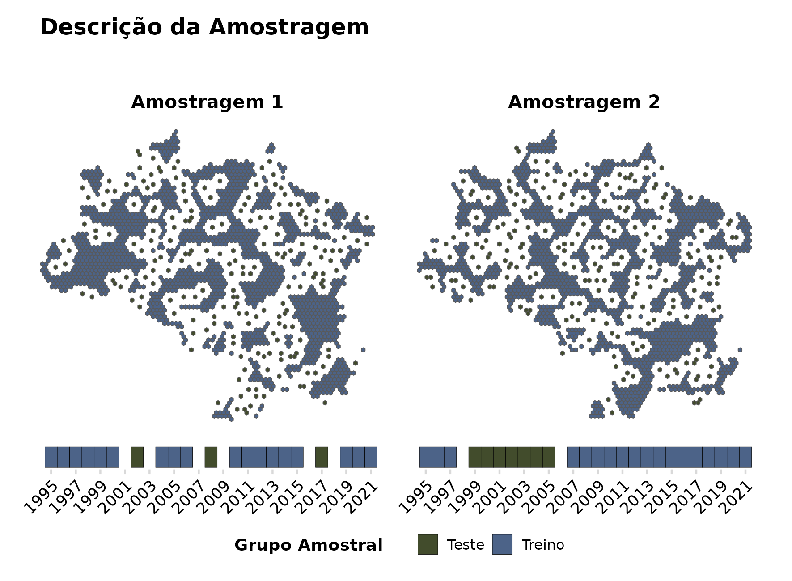

flowchart TD
A[Consulta da Literatura] --> B[Modelo Teórico]
C[Entrevistas] --> B
B --> D[Estruturação da Base de Dados]
E[Dados Disponíveis] --> D
B --> F[Análise Sociológica]
D --> G[Análise Estatística]
F --> H[Interpretação dos Resultados]
G --> H
3 Método
3.1 Visão Geral
Esse trabalho tem como objetivo central o desenvolvimento e a aplicação de um modelo teórico geral da . Para atingir esse objetivo, uma série de atividades serão conduzidas em sequência:
Desenvolvimento do modelo teórico geral da a partir de uma perspectiva do Realismo Crítico:
Nessa etapa o modelo teórico é criado a partir de entrevistas e leituras de artigos, livros, teses reportagens, documentários, e outros materiais audiovisuais que abordem o tema da . A seleção de materiais não é feito de forma sistemática, mas são feitas através de pesquisas baseadas no surgimento de questionamentos ao longo do desenvolvimento do modelo teórico.
Análise sociológica da através da aplicação de conceitos desenvolvidos na Teoria Geral dos Campos de Bourdieu:
A análise sociológica é feita pela caracterização do campo social, em que a faz parte como instrumento para obtenção de poder, e pela identificação de agentes sociais que fazem parte da disputa dentro desse campo. Esse processo é realizado com base na mesma literatura utilizada no desenvolvimento do modelo teórico. Essa etapa é conduzida através de três passos discutidos por Bourdieu (Grenfell 2018, 105): contextualizar o campo social da em relação ao campo do poder; identificar as posições ocupadas pelos agentes sociais que fazem parte do campo social da ; analisar o dos agentes sociais dentro do campo social analisado.
Análise estatística a partir da aplicação de algorítmos de regressão sobre dados relacionados a :
A análise estatística será realizada sobre dados com representação espacial e temporal. A seleção dos dados para a análise é baseada na literatura e disponibilidade dos mesmos, porém, para serem incluídos na análise, eles devem obedecer o mecanismo causal proposto pelo modelo teórico. Já a escolha do algorítmo estatístico não tem relação com o modelo teórico, e é feita a partir de um balanço entre complexidade e custo computacional.
Interpretação conjunta dos resultados:
A interpretação dos resultados das diferentes análises será realizada de maneira conjunta, através da perspectiva ontológica definida pelo Realismo Crítico. A interpretação será feita de maneira que os resultados estejam em sintonia com o modelo teórico proposto, em que serão identificadas lacunas, concordâncias e discordâncias entre os conhecimentos gerados por ambas análises.
A sequência de atividades que compõe a pesquisa é representada na Figura 3.1. Apesar do processo ser realizado de modo sequêncial, ele não é linear, e permite circularidades. Ou seja, o modelo teórico pode ser modificado ao longo da condução da pesquisa, que caso aconteça, força uma atualização de todas as etapas subsequentes.
O método geral do trabalho (como apresentado na Figura 3.1) pode ser caracterizado como um Método Misto Paralelo-Convergente, em que análises quantitativas e qualitativas são conduzidas paralelamente e independentemente (elas não se relacionam de maneira direta), até que seus resultados são interpretados de maneira conjunta. Porém, a idéia central desse trabalho é a adoção de uma perspectiva ontológica e epistemológica única para todas as análises conduzidas. Em teoria, essa idéia é completamente agnóstica em relação aos métodos de análise adotados. Portanto, não é feita uma defesa dos métodos de análise adotados, já que exitiriam uma infinidade de possibilidades metodológicas, mais ou menos apropriadas para o entendimento do fenômeno em questão.
Nas próximas sessões, cada parte do trabalho é descrita em maiores detalhes.
3.2 Modelo Teórico
O modelo teórico é desenvolvido com base em informações obtidas da literatura técnica e científica e entrevistas realisadas com pesquisadores que atuam no tema da (Figura 3.2). Porém, o desenvolvimento desse modelo teórico também é fortemente afetado pelas minhas experiências pessoais, como exposição à noticias, discussões diversas sobre o tema, e reflexões e indagações pessoais. Portanto, o conteúdo gerado nessa parte da pesquisa não pode ser considerado como produto de um método sistemático e reproduzível. Porém, o desenvolvimento do modelo teórico segue uma maneira de se refletir sobre um fenômeno, se inspira em certas proposições metodológicas, e se baseia parcialmente, em uma sistematização de informações.
flowchart TD
A[Entrevista] --> B[Dados]
C[Questões] --> D[Consulta da Literatura]
D --> E[Dados]
B --> F[Modelo Teórico]
A --> F
D --> F
F --> C
E --> F
F --> A
A maneira de se refletir sobre um fenômeno, adotada nesse trabalho, é baseada na idéia de retrodução do Realismo Crítico. A retrodução pode ser definida como uma atividade de imaginação em que pensamos nos mecanismos generativos que, se de fato forem reais, irão causar um fenômeno quando tais mecanismos forem manifestados (Bhaskar 2016, 3). A prática da retrodução implica em um exercício de imaginação que tenta transitar entre os domínios ontológicos do Realismo Crítico, o domínio do empírico, o domínio do atual e o domínio do real (Akram 2023, 53–54). Uma ilustração geral e superficial do exercício de retrodução feita nessa pesquisa pode ser feita da seguinte forma: em um cenário hipotético, acredita-se que os A e B sejam causadores da ; a partir disso, nos questionamos quais seriam as condições necessárias para que essa relação de A com a se manifeste; essas condições são traduzidas como o mecanismo generativo proposto; por consequência, nos questionamos se tal mecanismo generativo consegue explicar a relação de causa de B sobre a . Esse exercício é repetido em qualquer ordem, e a medida que esse processo se sucede, lacunas do mecanismo generativo podem ser identificadas e retificadas, assim como inconsistências podem ser eliminadas, se possível.
O desenvolvimento do modelo teórico também incorpora algumas idéias do método da Teoria Fundamentada (Glaser e Strauss 1968), e mais especificamente desse método baseado no Realismo Crítico, como proposto por Oliver (2011) e Hoddy (2018). Nesse projeto, a condução de entrevistas e consultas da literatura são sistematizadas em forma de dados qualitativos estruturados, contendo as idéias centrais obtidas a partir desses materiais. Essa sistematização de dados é feita de maneira concomitante com o desenvolvimento do modelo teórico.
O processo de sistematização de informação, na forma de dados qualitativos estruturados em tabela, é baseado nas entrevistas e nas consultas à literatura. As entrevistas são feitas de modo a especular sobre possíveis causas da , de maneira semelhante ao processo de retrodução ilustrado anteriormente. A partir das indagações feitas durante as entrevistas, são desenvolvidas questões que servem de base para buscas na literatura, que por sua vez fornecem mais informações sobre o fenômeno em questão, a .
Os dados, coletados a partir das entrevistas e consultas à literatura, contém as seguintes informações: identificação da fonte da informação (de forma anônima no caso das entrevistas); os identificados como relacionados a ; a descrição da relação entre os com a .
O processo de desenvolvimento do modelo teórico não apresenta um ponto final determinado. O modelo teórico pode ser modificado caso haja a descoberta de novos conhecimentos que desafiem a lógica do modelo. Porém, nesse projeto, a etapa de desenvolvimento do modelo teórico é interrompida quando novas informações obtidas não contribuam mais com a descrição ou modificação do modelo teórico.
O modelo teórico é baseado em conceitos do Realismo Crítico, sendo formado sobre especulações da existência de certos , e da existência de interações entre eles, formando um da . O modelo teórico, e seu , se situam na camada social da realidade, de acordo com a estratificação da realidade proposta pelo Realismo Crítico.
3.2.1 Entrevistas
As entrevistas conduzidas nesse projeto, tem o objetivo de obter informações sobre os fatores que afetam a ocorrência da . Essas informações servem de base para o desenvolvimento do modelo teórico da .
O método utilizado é de entrevistas semi-estruturadas. O roteiro das entrevistas é baseado em sugestões propostas por Bearman (2019), em que são priorizadas questões abertas, que incentivam descrições ricas nas respostas dos participantes. Também foram incorporados elementos da metodologia de entrevistas Centradas em Problemas (PCI) (Witzel e Reiter 2012), em que as entrevistas contém uma estrutura definida e centrada no fenômeno de interesse, mas que apresenta uma flexibilidade para incentivar respostas abertas e profundas (Döringer 2020).
O público alvo para participar nas entrevistas são profissionais, de diferentes áreas, atuantes no tema da . A seleção de candidatos é feita com a identificação de membros de organizações relevantes em relação a SVN, como órgãos públicos, ONGs e associações privadas, em que um membro representativo dessas organizações será selecionado como candidato. As seleção das organizações e seus membros prioriza a máxima variação de perfil dos candidatos (Palinkas et al. 2013), levando em consideração o bioma em que o participante é atuante, e o tipo de organização em que o mesmo participa.
As entrevistas são realizadas a distância, através de vídeo chamadas. Esse meio de entrevista tem sido frequentemente adotado em pesquisas qualitativas, e apesar de apresentarem desvantagens, como falhas técnicas durante as entrevistas, não há evidências claras de que os dados coletados apresentem menor riqueza de informações, em comparação com entrevistas presenciais (Thunberg e Arnell 2021). Além disso, o acesso a participantes é mais amplo, devido a falta de necessidade de deslocamento.
O roteiro das entrevistas pode ser dividido em três partes (Tabela 3.1). A parte introdutória da entrevista contém uma exposição sobre o tema e objetivos dessa pesquisa, assim como a motivação para a realização das entrevistas. A parte de desenvolvimento da entrevista contém perguntas inciais que estimulam a criação de uma narrativa por parte dos entrevistados, seguidas por perguntas mais específicas sobre o fenômeno em questão (Witzel e Reiter 2012). Por fim, a conclusão dá a oportunidade aos entrevistados de elaborar reflexões sobre o tema (Bearman 2019).
| Introdução |
|---|
| Introdução à pesquisa e ao entrevistador |
| Clarificação dos objetivos da pesquisa |
| Clarificação da motivação das entrevistas |
| Checagem de consentimento e do tempo disponível para a entrevista |
| Desenvolvimento |
| Contextualização de experiências prévias do participante com o tema da SVN |
| - Quais foram suas experiências mais importantes dentro do tema da SVN? |
| - Quais foram as regiões que você desenvolveu projetos dentro do tema da SVN? |
| Identificação de objetos que causam a SVN |
| - Qual é a sua perspectiva sobre a importância da SVN, em relação a sustentabilidade e desenvolvimento? |
| - De acordo com sua experiência, quais são os fatores mais importantes que causam a SVN? |
| Identificação das relações entre os objetos e a SVN |
| - Quais são as condições necessárias para que tal objeto tenha um impacto importante na SVN? |
| - Quais são os grupos de pessoas que participam desse objeto? E como elas acabam afetando a SVN? |
| Conclusão |
| Reflexões sobre a SVN |
| - Você acredita na possibilidade de que a SVN seja suprimida a ponto de não ser um problema socioambiental? |
| - Na sua opinião, existem condições em que a SVN é justificável apesar de seus impactos? |
| Oportunidade para o entrevistado realizar comentários abertos |
| Encerramento da entrevista |
Cada entrevista irá fornecer informações que servem de conteúdo para a geração de uma tabela de dados. Nessa tabela, são identificados os associados com a , e são descritas as condições necessárias para que essa associação ocorra.
| id | participante | objeto | condição |
|---|---|---|---|
| 1 | Entrevistado 1 | Objeto A | Condições X, Y e Z |
| 2 | Entrevistado 1 | Objeto B | Condições W e K |
| 3 | Entrevistado 2 | Objeto A | Condições P e I |
3.2.2 Consultas à Literatura
Assim como as entrevistas, a consulta à literatura tem o objetivo de obter informações sobre os fatores que afetam a ocorrência da , servindo de base para o desenvolvimento do modelo teórico.
A literatura consultada é de natureza diversa, podem ser artigos publicados em periódicos científicos, livros, documentos técnicos, dissertações e teses, reportagens, documentários e outros materiais audiovisuais, não sendo limitadas entre essas citadas. O motivo para essa abrangência é a de ter amplo acesso a documentos diversos sobre qualquer conteúdo relacionado à .
A busca por tais documentos é feita através das ferramentas de busca da Google e Google Scholar. O processo de buscas se caracteriza como uma revisão crítica (Grant e Booth 2009), que tem como o objtivo a interpretação de documentos para a elaboração de um produto considerado como um ponto de partida para avaliação futura. Portanto, a revisão adotada não tem como o objetivo realizar inferências sobre o corpo dos documentos analisados, nem de testar hipóteses associadas à esses materiais. A forma das buscas é baseada em indagações feitas através de informações obtidas nas entrevistas e consultas à literatura anteriores. As buscas também são feitas com bases em citações encontradas em documentos consultados.
As informações obtidas através das consultas são sistematizadas em uma tabela. Isso tem o objetivo de facilitar comparações entre os conteúdos de diferentes fontes. Essa tabela contém informações semelhantes a Tabela 3.2, porém, com dados adicionais que permitem a identificação da origem do dado (Tabela 3.3).
| id | doi | autor | titulo | ano | local | objeto | condição |
|---|---|---|---|---|---|---|---|
| 1 | https://doi.org/...1 | Fulano | Algo sobre algo | 1968 | Lá longe | Objeto A | Condições X, Y e Z |
| 2 | https://doi.org/...1 | Fulano | Algo sobre algo | 1968 | Lá longe | Objeto B | Condições W e K |
| 3 | https://doi.org/...2 | Sicrano et al. | Isto sobre aquilo | 2001 | Logo ali | Objeto A | Condições P e I |
É importante reforçar que, o desenvolvimento do modelo teórico, não é baseado restritamente aos dados presentes nas tabelas 3.2 e 3.3. Isso proporciona uma maior liberdade para o processo de reflexão de desenvolvimento do modelo teórico, que também é afetado pelos métodos de análise adotados.
Além disso, a justificativa para a adoção de um processo flexível de consulta à literatura, se baseia na vantagem de proporcionar maior liberdade de pensamento, mas também na ausência de um motivo forte para a realização de um processo metódico. Por exemplo, caso o objetivo da consulta à literatura fosse identificar as causas da mais citadas na literatura científica, seria então aconselhável adotar um método de revisão sistemática. Esse não é o caso dessa pesquisa.
3.3 Análise Sociológica
A análise sociológica é feita através da Teoria Geral dos Campos desenvolvida por Bourdieu, aplicada como perspectiva analítica do modelo teórico da . A análise é conduzida através da adaptação de três passos, identificados por Grenfell (2018):
Descrever a posição do analisado em relação ao :
A relação é descrita de forma a estabelecer como a acumulação de poder dentro de um influencia na acumulação de poder de forma mais abrangente, dentro do . Aqui, poder não é descrito apenas como o , mas uma forma de legitimação de um , e de persistência de sua própria existência.
Identificar os principais que participam do analisado. Descrever as posições que cada um ocupa dentro desse campo. E caracterizar as relações entre cada posição ocupada por cada :
As posições são caracterizadas pelo de cada , pelo objetivo do agente em relação ao fenômeno de interesse, e pela forma como um certo tipo de influencia o agente a atingir seu objetivo;
Caracterizar as disposições dos em relação ao fenômeno de interesse, e como essas disposições influênciam as ações tomadas com o objetivo desses agentes. Isso é feito através do conceito de :
As disposições são descritas de acordo com contextos históricos dos e de suas posições dentro do analisado.
Todas as etapas descritas acima serão feitas com base em informações obtidas das consultas à literatura. Portanto, conceitos como não serão representados de forma numérica ou como categorias qualitativas, mas de forma abstrata a partir de informações coletadas da literatura. Já o conceito de será descrito a partir de informações históricas relacionadas à um certo , e não por meio de entrevistas, como é comum de se observar em pesquisas feitas com base na Teoria Geral dos Campos desenvolvida por Bourdieu. Essa forma de análise se justifica pela dificuldade de obtenção de informações de maneiras convencionais, já que o tema da abrange de difícil acesso, como fazendeiros envolvidos com a SVN e militares.
A análise sociológica através da Teoria dos Campos de Bourdieu, será informada pelo modelo teórico e seu paradigma filosófico através da centralização da nas disputas dentro do campo social analisado, e como as disposições dos agentes sociais afetam a ocorrência da . A análise sociólogica é responsável pela contextualização histórica da manifestação da de acordo com o modelo teórico.
3.4 Análise Estatística
A análise estatística tem como o objetivo a aplicação do modelo teórico de forma numérica. Esse processo é conduzido através da obtenção e do processamento de dados quantitativos e qualitativos (que representam os ), e posteriormente na execução de um modelo de regressão sobre esses dados. No entanto, antes desse processo, é feita uma triagem de quais dados serão coletados e utilizados.
A triagem é feita com base em dados que foram identificados na literatura consultada. A partir dessa lista de possíveis dados, é feita uma avaliação, que consiste na verificação da adequação do , representado pelo dado, com relação ao modelo teórico. Ou seja, mesmo que o dado tenha sido considerado como correlacionado com a , não significa que ele obedece as regras impostas pelo modelo teórico. Como exemplo hipotético desse processo, caso a temperatura média histórica seja apontada como correlacionada à SVN na literatura, mas essa relação não consiga ser explicada pelo modelo teórico, os dados de temperatura não serão incluídos no modelo estatístico. Caso um dado indicado pela literatura tenha sua relação com a SVN explicada através das regras do modelo teórico, ele é selecionado para ser utilizado no modelo estatístico, passando a ser considerado como uma .
A análise estatística é conduzida através de um programa (em desenvolvimento) na forma de um pacote da linguagem de programação R (R Core Team 2024). O programa é de código aberto, podendo ser acessado em https://github.com/hugotseixas/tica. Esse pacote possui diversas dependências para seu funcionamento.
Loading required package: bonsaiLoading required package: parsnipLoading required package: future| Pacote | Versão | Citação |
|---|---|---|
arrow |
16.1.0 |
Richardson et al. (2024) |
base |
4.4.1 |
R Core Team (2024) |
cowplot |
1.1.3 |
Wilke (2024) |
curl |
5.2.1 |
Ooms (2024) |
dplyr |
1.1.4 |
Wickham et al. (2023) |
forcats |
1.0.0 |
Wickham (2023a) |
fs |
1.6.4 |
Hester, Wickham, e Csárdi (2024) |
ggplot2 |
3.5.1 |
Wickham (2016) |
glue |
1.7.0 |
Hester e Bryan (2024) |
gt |
0.11.0 |
Iannone et al. (2024) |
janitor |
2.2.0 |
Firke (2023) |
lubridate |
1.9.3 |
Grolemund e Wickham (2011) |
purrr |
1.0.2 |
Wickham e Henry (2023) |
ragg |
1.3.2 |
Pedersen e Shemanarev (2024) |
readxl |
1.4.3 |
Wickham e Bryan (2023) |
rlang |
1.1.4 |
Henry e Wickham (2024a) |
scales |
1.3.0 |
Wickham, Pedersen, e Seidel (2023) |
scico |
1.5.0 |
Pedersen e Crameri (2023) |
sf |
1.0.16 |
|
stars |
0.6.6 |
Pebesma e Bivand (2023b) |
stringr |
1.5.1 |
Wickham (2023b) |
tibble |
3.2.1 |
Müller e Wickham (2023) |
tidyr |
1.3.1 |
Wickham, Vaughan, e Girlich (2024) |
tidyselect |
1.2.1 |
Henry e Wickham (2024b) |
O programa computacional é responsável pela realização do acesso e persistência dos dados, pelo processamento dos dados, pela operacionalização do modelo estatístico, e pela produção de visualizações.
3.4.1 Estruturação da Base de Dados
O processo para a criação do banco de dados consiste em acessar e extrair os dados de suas fontes, processar e transformar os dados em uma grade regular, e armazena-los em ambiente computacional local (Figura 3.3).
flowchart TD
A[Fonte do Dado] --> E[Pré Processamento]
B[Grade Regular] --> E
E --> F[Dados Estruturados em Grade]
F --> G[Banco de Dados]
O processamento de cada dado varia com seu formato (tabular, vetorial ou matricial), e de sua organização original. O detalhamento dos dados, como sua fonte e formato, e seu processamento, podem ser lidos na sessão Apêndice A. No final do processamento, cada dado é estruturado dentro de um grade regular hexagonal (Figura 3.4), em que cada exagono possui 140 mil hectares, aproximadamente. A grade hexagonal facilita a criação de variáveis que representam vizinhança entre células da grade, já que a distância entre essas vizinhanças é constante. Já o tamanho de cada célula foi determinado por um balanço entre detalhamento dos dados e custo computacional.

3.4.2 Desenvolvimento do Modelo Estatístico
O desenvolvimento dos modelos segue as práticas padrão usual de algorítmos de regressão supervisionados (Figura 3.5). Nesse método, os dados disponíveis são separados entre dados de treinamento, responsáveis por treinar os modelos, dados de validação, utilizados para ajustes dos parâmetros dos modelos, e dados de teste, que são utilizados para a aplicação dos modelos e comparação dos resultados.
flowchart TD
A[Banco de dados] --> C[Divisão dos Dados]
C --> D[Dados de Treinamento]
D --> F[Ajuste Inicial do Modelo]
D --> G[Dados de Validação]
C --> H[Dados de Teste]
F --> I[Ajuste de Parâmetros]
G --> I
I --> J[Ajuste Final do Modelo]
H --> K[Avaliação do Modelo]
J --> K
J --> L[Interpretação do Modelo]
K --> L
O algorítmo de regressão usado para predição da é o Random Forest, um algorítmo utilizado extensamente em tarefas de regressão e classificação, que tem a capacidade de representar relações não lineares entre as variáveis, e que não necessita de um processo de parametrização extenso em comparação à outros algorítmos.
A etapa de amostragem é conduzida pela realização de uma sequência de amostras espaciais e temporais, feita para treino e teste do modelo estatístico, realizada 100 vezes, para garantir uma quantidade razoavel de cenários amostrais em que o modelo estatístico é aplicado. Para diminuir o viés nos resultados do modelo, devido à dependência espacial e temporal dos dados, observações amostradas para cada grupo apresentam uma distância espacial de no mínimo 80 quilômetros, e uma diferença temporal de um ano Figura 3.6.

A parametrização do modelo estatístico é feita pelo ajuste dos parâmetros em cada uma das 100 amostragens, ilustradas na Figura 3.6. Os parâmetros são, o número de variáveis preditoras que são selecionadas na criação das árvores de decisão, e quantidade de observações amostradas para serem utilizadas ao longo das árvores de decisão do algorítmo. O ajuste dos parâmetros é realizado através de amostragens aleatórias (bootstrap) dos dados de treino como observações de validação, seguida pelo teste de 30 valores aleatórios para cada parâmetro do algorítmo. Os valores dos parâmetros para a aplicação final do modelo estatísticosão determinados pela combinação de valores que apresentou o menor Erro Quadrático Médio (RMSE) em relação à predição dos dados de validação.
A avaliação dos resultados do modelo é feita através de visualizações espaciais e temporais dos valores preditos da , e da distribuição e valores médios do Erro Médio Absoluto (MAE) das predições.
A interpetação dos resultados do modelo estatístico é feito pela aplicação do método nomeado como SHAP (Lundberg, Erion, e Lee 2018), utilizado como ferramenta de interpretação local e global de modelos de regressão e classificação.
3.5 Interpretação dos Resultados
A interpretação final dos resultados é feita a partir da leitura de como o efeito de um objeto transitivo, pela perspectiva de uma análise sociológica ou estatística, é explicado pelo modelo teórico. Ou seja, é a transposição do resultado da análise empírica para o dominio ontológico do real. Nessa etapa, serão identificados objetos contemplados na análise estatística, que sejam relacionados com agentes sociais contemplados na análise sociológica. A partir desse cruzamento de informações obtidas nos resultados, espera-se alcançar um aprofundamento das discussões sobre as causas da ocorrência da .
Referências
Akram, Sadiya. 2023. Bourdieu, Habitus and Field: A Critical Realist Approach. Palgrave Studies in Relational Sociology. Springer International Publishing. https://doi.org/10.1007/978-3-031-41846-4.
Bearman, Margaret. 2019. «Focus on Methodology: Eliciting rich data: A practical approach to writing semi-structured interview schedules». Focus on Health Professional Education: A Multi-Professional Journal 20 (3): 1. https://doi.org/10.11157/fohpe.v20i3.387.
Bhaskar, Roy. 2016. Enlightened common sense: The philosophy of critical realism.
Döringer, Stefanie. 2020. «“The problem-centred expert interview”. Combining qualitative interviewing approaches for investigating implicit expert knowledge». International Journal of Social Research Methodology 24 (3): 265–78. https://doi.org/10.1080/13645579.2020.1766777.
Firke, Sam. 2023. janitor: Simple Tools for Examining and Cleaning Dirty Data. https://CRAN.R-project.org/package=janitor.
Glaser, B. G., e A. L Strauss. 1968. Time for Dying. Aldine.
Grant, Maria J., e Andrew Booth. 2009. «A typology of reviews: an analysis of 14 review types and associated methodologies». Health Information & Libraries Journal 26 (2): 91–108. https://doi.org/10.1111/j.1471-1842.2009.00848.x.
Grenfell, Michael. 2018. Pierre Bourdieu: conceitos fundamentais.
Grolemund, Garrett, e Hadley Wickham. 2011. «Dates and Times Made Easy with lubridate». Journal of Statistical Software 40 (3): 1–25. https://www.jstatsoft.org/v40/i03/.
Henry, Lionel, e Hadley Wickham. 2024a. rlang: Functions for Base Types and Core R and «Tidyverse» Features. https://CRAN.R-project.org/package=rlang.
———. 2024b. tidyselect: Select from a Set of Strings. https://CRAN.R-project.org/package=tidyselect.
Hester, Jim, e Jennifer Bryan. 2024. glue: Interpreted String Literals. https://CRAN.R-project.org/package=glue.
Hester, Jim, Hadley Wickham, e Gábor Csárdi. 2024. fs: Cross-Platform File System Operations Based on «libuv». https://CRAN.R-project.org/package=fs.
Hoddy, Eric T. 2018. «Critical realism in empirical research: employing techniques from grounded theory methodology». International Journal of Social Research Methodology 22 (1): 111–24. https://doi.org/10.1080/13645579.2018.1503400.
Iannone, Richard, Joe Cheng, Barret Schloerke, Ellis Hughes, Alexandra Lauer, JooYoung Seo, Ken Brevoort, e Olivier Roy. 2024. gt: Easily Create Presentation-Ready Display Tables. https://CRAN.R-project.org/package=gt.
Lundberg, Scott M., Gabriel G. Erion, e Su-In Lee. 2018. «Consistent Individualized Feature Attribution for Tree Ensembles». arXiv. https://doi.org/10.48550/ARXIV.1802.03888.
Müller, Kirill, e Hadley Wickham. 2023. tibble: Simple Data Frames. https://CRAN.R-project.org/package=tibble.
Oliver, C. 2011. «Critical Realist Grounded Theory: A New Approach for Social Work Research». British Journal of Social Work 42 (2): 371–87. https://doi.org/10.1093/bjsw/bcr064.
Ooms, Jeroen. 2024. curl: A Modern and Flexible Web Client for R. https://CRAN.R-project.org/package=curl.
Palinkas, Lawrence A., Sarah M. Horwitz, Carla A. Green, Jennifer P. Wisdom, Naihua Duan, e Kimberly Hoagwood. 2013. «Purposeful Sampling for Qualitative Data Collection and Analysis in Mixed Method Implementation Research». Administration and Policy in Mental Health and Mental Health Services Research 42 (5): 533–44. https://doi.org/10.1007/s10488-013-0528-y.
Pebesma, Edzer. 2018. «Simple Features for R: Standardized Support for Spatial Vector Data». The R Journal 10 (1): 439–46. https://doi.org/10.32614/RJ-2018-009.
Pebesma, Edzer, e Roger Bivand. 2023a. Spatial Data Science: With applications in R. Chapman and Hall/CRC. https://doi.org/10.1201/9780429459016.
———. 2023b. Spatial Data Science: With applications in R. London: Chapman; Hall/CRC. https://doi.org/10.1201/9780429459016.
Pedersen, Thomas Lin, e Fabio Crameri. 2023. scico: Colour Palettes Based on the Scientific Colour-Maps. https://CRAN.R-project.org/package=scico.
Pedersen, Thomas Lin, e Maxim Shemanarev. 2024. ragg: Graphic Devices Based on AGG. https://CRAN.R-project.org/package=ragg.
R Core Team. 2024. R: A Language and Environment for Statistical Computing. Vienna, Austria: R Foundation for Statistical Computing. https://www.R-project.org/.
Richardson, Neal, Ian Cook, Nic Crane, Dewey Dunnington, Romain François, Jonathan Keane, Dragoș Moldovan-Grünfeld, Jeroen Ooms, Jacob Wujciak-Jens, e Apache Arrow. 2024. arrow: Integration to «Apache» «Arrow». https://CRAN.R-project.org/package=arrow.
Thunberg, Sara, e Linda Arnell. 2021. «Pioneering the use of technologies in qualitative research – A research review of the use of digital interviews». International Journal of Social Research Methodology 25 (6): 757–68. https://doi.org/10.1080/13645579.2021.1935565.
Wickham, Hadley. 2016. ggplot2: Elegant Graphics for Data Analysis. Springer-Verlag New York. https://ggplot2.tidyverse.org.
———. 2023a. forcats: Tools for Working with Categorical Variables (Factors). https://CRAN.R-project.org/package=forcats.
———. 2023b. stringr: Simple, Consistent Wrappers for Common String Operations. https://CRAN.R-project.org/package=stringr.
Wickham, Hadley, e Jennifer Bryan. 2023. readxl: Read Excel Files. https://CRAN.R-project.org/package=readxl.
Wickham, Hadley, Romain François, Lionel Henry, Kirill Müller, e Davis Vaughan. 2023. dplyr: A Grammar of Data Manipulation. https://CRAN.R-project.org/package=dplyr.
Wickham, Hadley, e Lionel Henry. 2023. purrr: Functional Programming Tools. https://CRAN.R-project.org/package=purrr.
Wickham, Hadley, Thomas Lin Pedersen, e Dana Seidel. 2023. scales: Scale Functions for Visualization. https://CRAN.R-project.org/package=scales.
Wickham, Hadley, Davis Vaughan, e Maximilian Girlich. 2024. tidyr: Tidy Messy Data. https://CRAN.R-project.org/package=tidyr.
Wilke, Claus O. 2024. cowplot: Streamlined Plot Theme and Plot Annotations for «ggplot2». https://CRAN.R-project.org/package=cowplot.
Witzel, Andreas, e Herwig Reiter. 2012. The problem-centred interview. Sage.